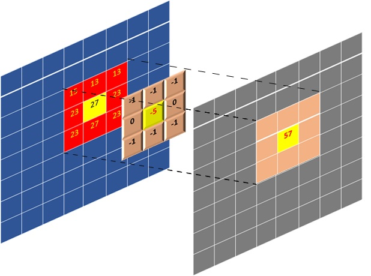

2021.1 Vitis™ Application Acceleration Development Flow TutorialsSee 2020.2 Vitis Application Acceleration Development Flow Tutorials |
Video Convolution Filter: Introduction and Performance Estimation¶
This lab will explore a 2D video convolution filter and measure its performance on the host machine. These measurements will establish a performance baseline. The amount of acceleration that should be provided by hardware implementation is calculated based on the required performance constraints. In the next lab, we will estimate the performance of the FPGA accelerator. In a nutshell, during this lab, you will:
Learn about video convolution filters
Measure the performance of software implemented convolution filter
Calculate required acceleration vs. software implementation for given performance constraints
Estimate the performance of hardware accelerator before implementation
Video Filtering Applications and 2-D Convolution Filters¶
Video applications use different types of filters extensively for multiple reasons: filter noise, manipulate motion blur, enhance color and contrast, edge detection, creative effects, etc. At its core, a convolution video filter carries out some form of data average around a pixel, which redefines the amount and type of correlation any pixel has to its surrounding area. Such filtering is carried out for all the pixels in a video frame.
A matrix of coefficients defines a convolution filter. The convolution operation is essentially a sum of products performed on a pixel set (a frame/image sub-matrix centered around a given pixel) and a coefficients matrix. The figure below illustrates how convolution is calculated for a pixel; it is highlighted in yellow. Here the filter has a coefficient matrix that is 3x3 in size. The figure also displays how the whole output image is generated during the filtering process. The index of the output pixel being generated is the index of the input pixel highlighted in yellow that is being filtered. In algorithmic terms, the process of filtering consists of:
Selecting an input pixel as highlighted in yellow in the figure below
Extracting a sub-matrix whose size is the same as filter coefficients
Calculating element-wise sum-of-product of extracted sub-matrix and coefficients matrix
Placing the sum-of-product as output pixel in output image/frame on the same index as the input pixel

Performance Requirements for 1080p HD Video¶
You can easily calculate the application performance requirements given the standard performance specs for 1080p High Definition (HD) video. Then these top-level requirements can be translated into constraints for hardware implementation or software throughput requirements. For 1080p HD video at 60 frames per seconds(FPS) the specs are listed below as well as required throughput in terms of pixels per second is calculated:
Video Resolution = 1920 x 1080
Frame Width (pixels) = 1920
Frame Height (pixels) = 1080
Frame Rate(FPS) = 60
Pixel Depth(Bits) = 8
Color Channels(YUV) = 3
Throughput(Pixel/s) = Frame Width * Frame Height * Channels * FPS
Throughput(Pixel/s) = 1920*1080*3*60
Throughput (MB/s) = 373 MB/s
The required throughput to meet 60 FPS performance turns out to be 373 MB/s ( since each pixel is 8-bits).
Software Implementation¶
This section will discuss the baseline software implementation and performance measurements, which will be used to gauge the acceleration requirements given the performance constraints.
The convolution filter is implemented in software using a typical multi-level nested loop structure. Outer two loops define the pixel to be processed(iterating over each pixel). The inner two loops perform the sum-of-product (SOP) operation, actual convolution filtering between the coefficient matrix and the selected sub-matrix from the image centered around the processed pixel.
TIP: Boundary conditions where it is not possible to center sub-matrix around a given pixel require special processing. This algorithm assumes all pixels beyond the boundary of the image have zero values.
void Filter2D(
const char coeffs[FILTER_V_SIZE][FILTER_H_SIZE],
float factor,
short bias,
unsigned short width,
unsigned short height,
unsigned short stride,
const unsigned char *src,
unsigned char *dst)
{
for(int y=0; y<height; ++y)
{
for(int x=0; x<width; ++x)
{
// Apply 2D filter to the pixel window
int sum = 0;
for(int row=0; row<FILTER_V_SIZE; row++)
{
for(int col=0; col<FILTER_H_SIZE; col++)
{
unsigned char pixel;
int xoffset = (x+col-(FILTER_H_SIZE/2));
int yoffset = (y+row-(FILTER_V_SIZE/2));
// Deal with boundary conditions : clamp pixels to 0 when outside of image
if ( (xoffset<0) || (xoffset>=width) || (yoffset<0) || (yoffset>=height) ) {
pixel = 0;
} else {
pixel = src[yoffset*stride+xoffset];
}
sum += pixel*coeffs[row][col];
}
}
// Normalize and saturate result
unsigned char outpix = MIN(MAX((int(factor * sum)+bias), 0), 255);
// Write output
dst[y*stride+x] = outpix;
}
}
}
The following snapshot shows how the top-level function calls the convolution filter function for an image with three components or channels. Here OpenMP pragma is used to parallelize software execution using multiple threads. You can open src/host_randomized.cpp and src/filter2d_sw.cpp from tutorial directory to examine all implementation details.
#pragma omp parallel for num_threads(3)
for(int n=0; n<numRunsSW; n++)
{
// Compute reference results
Filter2D(filterCoeffs[filterType], factor, bias, width, height, stride, y_src, y_ref);
Filter2D(filterCoeffs[filterType], factor, bias, width, height, stride, u_src, u_ref);
Filter2D(filterCoeffs[filterType], factor, bias, width, height, stride, v_src, v_ref);
}
Running the Software Application¶
To run the software application, go to the directory called “sw_run” and launch the application as follows:
cd $CONV_TUTORIAL_DIR/sw_run
./run.sh
Once the application is launched, it should produce an output similar to the one shown below. The software application will process a randomly generated set of images and report performance. Here you have used randomly generated images to avoid any extra library dependencies such as OpenCV. But in the next labs, while working with the hardware implementation, the option to use the OpenCV library for loading images or use randomly generated images will be provided given the user has OpenCV 2.4 installed on the machine. If another version of OpenCV is needed, the user can modify the host application to use different APIs to load and store images from the disk.
----------------------------------------------------------------------------
Number of runs : 60
Image width : 1920
Image height : 1080
Filter type : 6
Generating a random 1920x1080 input image
Running Software version on 60 images
CPU Time : 24.4447 s
CPU Throughput : 14.5617 MB/s
----------------------------------------------------------------------------
The application run measures performance using high precision timers and reports it as throughput. The machine used for experiments produced a throughput of 14.51 MB/s. The machine details are listed below:
CPU Model : Intel(R) Xeon(R) CPU E5-1650 v2 @ 3.50GHz
RAM : 64 GB
The measured performance is “2.34 FPS” only, whereas the required throughput is 60 FPS. The acceleration needed to meet the required performance of 60 FPS:
Acceleration Factor = Throughput (Required)/Throughput(SW only)
Acceleration Factor = 373/14.56 = 25.6X
So to meet the required performance of processing 60 frames per second, the software implementation needs to be accelerated by a factor of 26x.
Hardware Implementation¶
To understand what kind of hardware implementation is needed given the performance constraints, you can examine the convolution kernel in some detail:
The core compute is done in a 4-level nested loop, but you can break it to the compute per output pixel produced.
In terms of the output-pixels produced, it is clear from the filter source code that a single output pixel is produced when the inner two loops finish execution once.
These two loops are essentially doing the sum-of-product on a coefficient matrix and image sub-matrix. The matrix sizes are defined by the coefficient matrix, which is 15x15.
The inner two loops are performing a dot product of size 225(15x15). In other words, the two inner loops perform 225 multiply-accumulate (MAC) operations for every output pixel produced.
Baseline Hardware Implementation Performance¶
The simplest and most straightforward hardware implementation can be achieved by passing this current kernel source code through the Vitis HLS tool. It will pipeline the innermost loop with II=1, performing only one multiply-accumulate(MAC) per cycle. The performance can be estimated based on the MACs as follows:
MACs per Cycle = 1
Hardware Fmax(MHz) = 300
Throughput = 300/225 = 1.33 (MPixels/s) = 1.33 MB/s
Here the hardware clock frequency is assumed to be 300MHz because, in general, for the U200 Xilinx Alveo Data Center card, this is the maximum supported clock frequency when using Vitis HLS based design flow. The performance turns out to be 1.33 MB/s with baseline hardware implementation. From the convolution filter source code, it can also be estimated how much memory bandwidth is needed at the input and output for achieved throughput. From the convolution filter source code also shown above, it is clear that the inner two loops, while calculating a single output pixel, performs 225(15*15) reads at the input so:
Output Memory Bandwidth = Throughput = 1.33 MB/s
Input Memory Bandwidth = Throughput * 225 = 300 MB/s
For the baseline implementation, the memory bandwidth requirements are very trivial, assuming that PCIe and device DDR memory bandwidths on Xilinx Acceleration Cards/Boards are of the order of 10s of GB/s. As you have seen in previous sections, the throughput required for 60FPS 1080p HD video is 373 MB/s. So it clear that to meet the performance requirement:
Acceleration Factor to Meet 60FPS Performance = 373/1.33 = 280x
Acceleration Factor to Meet SW Performance = 14.5/1.33 = 10.9x
Performance Estimation for Optimized Hardware Implementations¶
From the above calculations, it is clear that you need to improve the performance of a baseline hardware implementation by 280x to process 60 FPS. One of the paths you can take is to start unrolling the inner loops and pipeline. For example, by unrolling the innermost loop, which iterates 15 times, you can improve the performance by 15x. With that one change, the hardware performance will already be better than software-only implementation, but not yet good enough to meet the required video performance. Another approach you can follow is to unroll the inner two loops and gain in performance by 15*15=225, which means a throughput of 1-output pixel per cycle. The performance and memory bandwidth requirements will be as follows:
Throughput = Fmax * Pixels produced per cycle = 300 * 1 = 300 MB/s
Output Memory Bandwidth = Fmax * Pixels produced per cycle = 300 MB/s
Input Memory Bandwidth = Fmax * Input pixels read per output pixel = 300 * 225 = 67.5 GB/s
The required output memory bandwidth scales linearly with throughput, but input memory bandwidth has gone up enormously and might not be sustainable. A closer look at the convolution filter will reveal that it is not required to read all 225(15x15) pixels from the input memory for processing. An innovative caching scheme can be built to avoid such extensive use of input memory bandwidth.
The convolution filter belongs to a class of kernels known as stencil kernels, which can be optimized to increase input data reuse extensively. Which can result in substantially reduced memory bandwidth requirements. With a caching scheme, you can bring the input bandwidth required to be the same as output, which is around 300 MB/s. With the optimized data reuse scheme, when both inner loops are unrolled, it will require that only 1-input pixel is read for producing one output pixel on average and hence input memory bandwidth of 300 MB/s.
Although you can reduce the input bandwidth, the achieved performance will still only be 300 MB/s, which is less than the required 373 MB/s. To deal with this, you can look for other ways to increase the throughput of hardware. One approach is to duplicate kernel instances, also called compute units. In terms of heterogeneous computing, you can increase the number of compute units so that you can process data in parallel. In the convolution filter case, you can process all color channels (YUV) on separate compute units. When using three compute units, one for each color channel, the expected performance summary will be as follows:
Throughput(estimated) = Performance of Single Compute Unit * No. Compute Units = 300 x 3 = 900 MB/s
Acceleration Against Software Implementation = 900/14.5 = 62x
Kernel Latency ( per image on any color channel ) = (1920*1080) / 300 = 6.9 ms
Video Processing Rate = (1/Kernel Latency) = 144 FPS
In this lab, you have learned about:
Basics of convolution filter
Profiled the performance of a software-only implementation
Estimated the performance and requirements for hardware implementations
Given these performance numbers, architecture selection, and implementation details, the next lab will show how you can design the kernel hardware and end up with an accelerated application that provides performance very close to these estimates.
Next Lab Module: Design and Analysis of Hardware Kernel Module for 2-D Video Convolution Filter
Copyright© 2020-2021 Xilinx